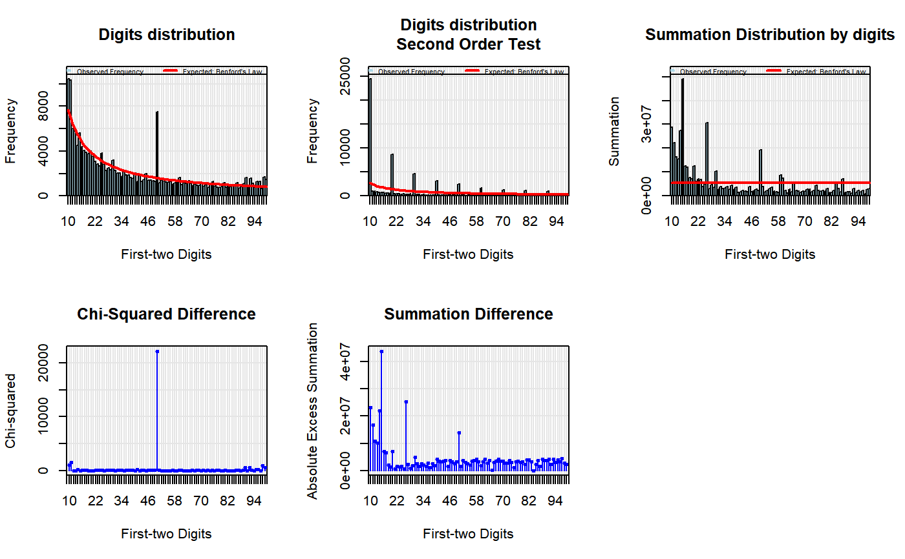

This function validates a dataset using Benford's Law. Its main purposes are to find out where the dataset deviates from Benford's Law and to identify suspicious data that need further verification.
For a more complete example, see the package help at benford.analysis.
benford(data, number.of.digits = 2, sign = "positive", discrete = TRUE, round = 3, data.name = NULL)
| data | a numeric vector. |
|---|---|
| number.of.digits | how many first digits to analyze. |
| sign | The default value for sign is "positive" and it analyzes only data greater than zero. There are also the options "negative" and "both" that will analyze only negative values or both positive and negative values of the data, respectively. For large datasets with both positive and negative numbers, it is usually recommended to perform a separate analysis for each group, for the incentives to manipulate the numbers are usually different. |
| discrete | most real data - like population numbers or accounting data - are discrete, so the default is TRUE. This parameter sets rounding to the differences of the ordered data to avoid floating point number errors in the second order distribution, that usually occurs when data is discrete and the ordered numbers are very close to each other. If your data is continuous (like a simulated lognormal) you should run with discrete = FALSE. |
| round | it defines the number of digits that the rounding will use if discrete = TRUE. |
| data.name | the name of your data to show. If |
An object of class Benford containing the results of the analysis. It is a list of eight objects, namely:
general information, including
data.name: the name of the data used.
n: the number of observations used.
n.second.order: the number of observations used for second order analysis.
number.of.digits: the number of first digits analyzed.
a data frame with:
lines.used: the original lines of the dataset.
data.used: the data used.
data.mantissa: the log data's mantissa.
data.digits: the first digits of the data.
a data frame with:
data.second.order: the differences of the ordered data.
data.second.order.digits: the first digits of the second order analysis.
a data frame with:
digits: the groups of digits analyzed.
data.dist: the distribution of the first digits of the data.
data.second.order.dist: the distribution of the first digits of the second order analysis.
benford.dist: the theoretical benford distribution.
data.second.order.dist.freq: the frequency distribution of the first digits of the second order analysis.
data.dist.freq: the frequency distribution of the first digits of the data.
benford.dist.freq: the theoretical benford frequency distribution.
benford.so.dist.freq: the theoretical benford frequency distribution of the second order analysis.
data.summation: the summation of the data values grouped by first digits.
abs.excess.summation: the absolute excess summation of the data values grouped by first digits.
difference: the difference between the data and benford frequencies.
squared.diff: the chi-squared difference between data and benford frequencies.
absolute.diff: the absolute difference between data and benford frequencies.
z.statistic: the z-statistic difference between data and benford relative frequencies.
a data frame with:
mean.mantissa: the mean of the mantissa.
var.mantissa: the variance of the mantissa.
ek.mantissa: the excess kurtosis of the mantissa.
sk.mantissa: the skewness of the mantissa.
the mean absolute deviation.
the distortion factor
list of "htest" class statistics:
chisq: Pearson's Chi-squared test.
mantissa.arc.test: Mantissa Arc Test.
ks.test: Kolmogorov-Smirnov Test.
data(corporate.payment) #loads data bfd.cp <- benford(corporate.payment$Amount) #generates benford object bfd.cp #prints#> #> Benford object: #> #> Data: corporate.payment$Amount #> Number of observations used = 185083 #> Number of obs. for second order = 65504 #> First digits analysed = 2 #> #> Mantissa: #> #> Statistic Value #> Mean 0.496 #> Var 0.092 #> Ex.Kurtosis -1.257 #> Skewness -0.002 #> #> #> The 5 largest deviations: #> #> digits absolute.diff #> 1 50 5938.25 #> 2 11 3331.98 #> 3 10 2811.92 #> 4 14 1043.68 #> 5 98 889.95 #> #> Stats: #> #> Pearson's Chi-squared test #> #> data: corporate.payment$Amount #> X-squared = 32094, df = 89, p-value < 2.2e-16 #> #> #> Mantissa Arc Test #> #> data: corporate.payment$Amount #> L2 = 0.0039958, df = 2, p-value < 2.2e-16 #> #> #> Kolmogorov-Smirnov test #> #> data: corporate.payment$Amount #> D = 0.033195, critical value = 0.0031612, alpha = 0.0500000 #> #> Mean Absolute Deviation (MAD): 0.002336614 #> MAD Conformity - Nigrini (2012): Nonconformity #> Distortion Factor: -1.065467 #> #> Remember: Real data will never conform perfectly to Benford's Law. You should not focus on p-values!